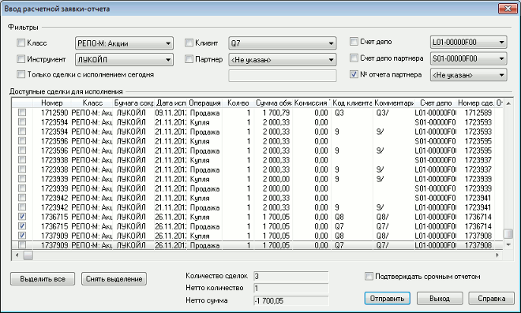

Окно ввода новой расчетной заявки-отчета может быть вызвано одним из следующих способов:
- В Таблице сделок для исполнения (в таблице
должна присутствовать хотя бы одна заявка):
Выбором пункта контекстного меню «Подтвердить отчетом»;- Двойным щелчком левой кнопки мыши на строке с заявкой;
- Нажатием кнопки
 на панели инструментов;
на панели инструментов;
- Нажатием клавиши «F2».
- Общим способом выполнения транзакций - нажатием кнопки на панели инструментов, выбором соответствующего класса (например «РПС: А1-Акции») и операции «Ввод расчетной заявки-отчета (макс. 4 сделки)». Эта же операция может быть выполнена горячей клавишей «Ctrl»+«T».

Фильтры:
- «Класс» - выбор класса бумаг из списка.
- «Инструмент» - выбор инструмента в данном классе.
- «Клиент» – код клиента.
- «Партнер» - код участника торгов, являющегося контрагентом по сделке.
- «Счет депо» - код счета депо.
- «Счет депо партнера» - код счета депо партнера.
- «№ отчета партнера» – номер отчета партнера по сделке.
- «Только сделки с исполнением сегодня» - фильтр по сделкам с наступившим сроком исполнения.
Настройки фильтров формы ввода расчетной заявки-отчета сохраняются в файл конфигурации (*.wnd).
- Если в таблице «Сделки для исполнения» выделена строка со сделкой и из контекстного меню таблицы открыта форма «Ввод расчетной заявки-отчета», то поля формы: «Класс», «Инструмент», «Клиент», «Партнер», «Счет депо», «Счет депо партнера», «№ отчета партнера» заполняются значениями, указанными в этой сделке.
Для подтверждения сделок выберите их, отметив «галочкой» в первой колонке. Нажатие кнопки «Выделить все» позволяет отметить все заявки в списке. Нажатием кнопки «Снять выделение» снимаются отметки со всех заявок.
Справочные поля:
- «Количество сделок» отображает количество сделок, включенных в отчет.
- «Нетто количество» – сальдо изменения позиции по бумагам в результате исполнения выбранных сделок.
- «Нетто сумма» – сальдо изменения позиции по деньгам в результате исполнения выбранных сделок.
Если количество выбранных в таблице сделок превышает максимальное количество сделок, доступное для подтверждения в одной транзакции (4 сделки), то значения в полях «Нетто количество» и «Нетто сумма» очищаются, и в левой нижней части формы выводится предупреждение «Нетто-параметры не могут быть посчитаны».
- «Подтверждать срочным отчетом» – признак исполнения в режиме расчетов по правилам простого клиринга.
Нажатием кнопки «Отправить» заявка-отчет отсылается в торговую систему. Нажатие кнопки «Выход» закрывает окно без отправления заявки.
Заявка-отчет, принятая торговой системой отображается в Таблице заявок-отчетов на сделки РПС. Соответствующая ей сделка в Таблице сделок для исполнения изменит статус с «Ждет исполнения» на «Включен в отчет». После того, как партнер по сделке подтвердит ее со своей стороны, статус изменится на «Исполнен» и сделка будет завершена.
См. также: